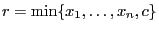

Next: GRBModel::addGenConstrAbs() Up: GRBModel::addGenConstrXxx() Previous: GRBModel::addGenConstrMax()
Add a new general constraint of type GRB_GENCONSTR_MIN to a model.
A MIN constraint
 states that the resultant
variable  should be equal to the minimum of the operand variables
should be equal to the minimum of the operand variables
 and the constant
and the constant  .
.
| GRBGenConstr | addGenConstrMin ( | GRBVar | resvar, |
| const GRBVar* | vars, | ||
| int | len, | ||
| double | constant=GRB_INFINITY, | ||
| string | name="" ) |
resvar: The resultant variable of the new constraint.
vars: Array of variables that are the operands of the new constraint.
len: Number of operands in the new constraint (length of vars array).
constant (optional): The additional constant operand of the new constraint.
name (optional): Name for the new general constraint.
Return value:
New general constraint.